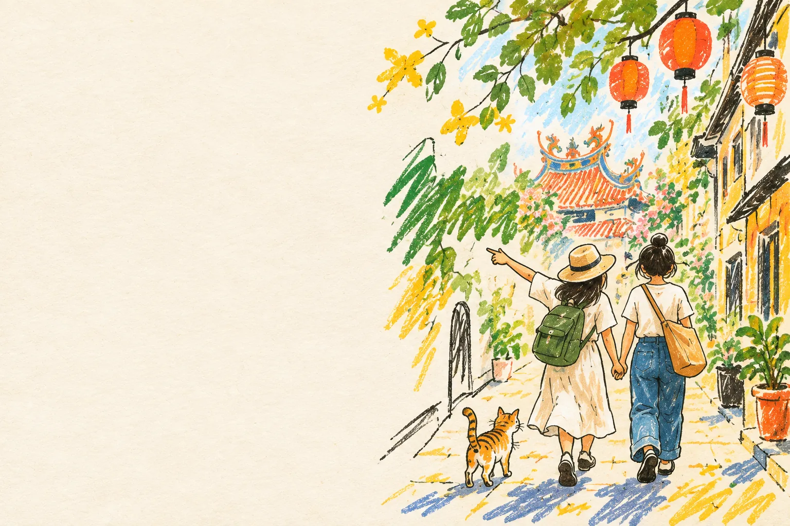

富盛號
📍 臺南市中西區民族路三段11號
民國36年創立的傳統碗粿店，配魚羹一起吃很對味。
小提醒：週四公休，營業時間 07:00–17:00，熱門時段可能排隊。
步行約 10 分鐘

台南兩天一夜・留點時間散步，和朋友慢慢玩。
集合地點：台南火車站前站
投票已結束
府城巷弄裡，邊走邊吃
民國36年創立的傳統碗粿店，配魚羹一起吃很對味。
小提醒：週四公休，營業時間 07:00–17:00，熱門時段可能排隊。
逛逛日治時期老百貨，搭電梯上頂樓看鳥居神社與城市風景。
小提醒：每日 11:00–21:00 開放，免門票；想慢慢逛可預留一小時。
走上木棧道穿梭榕樹與老倉庫，感受安平特有的屋樹共生。
小提醒：每日 08:30–17:30，成人全票70元；午後戶外記得防曬。
用四代傳承的府城手路菜，替第一天晚餐留一個正式的句點。
小提醒：週二至週日 11:00–14:00、17:00–21:00，週一公休；紅蟳米糕建議先預訂。
睡飽再出發，帶著好心情回家
用一顆台南人熟悉的割包開啟第二天，豬舌包很值得一試。
小提醒：週一至週日 08:00–18:00、週四休息，早點到比較不怕撲空。
沿著五條港舊河港入口散步，慢慢逛文創小店與老街屋。
小提醒：街道全天可走，但各店家營業時間不同；部分店內不開放拍照。
在原中國城舊址的親水公園吹風，看保留下來的城市歷史痕跡。
小提醒：週二休息，其餘 09:00–22:00；戲水與拍照時留意地面濕滑。